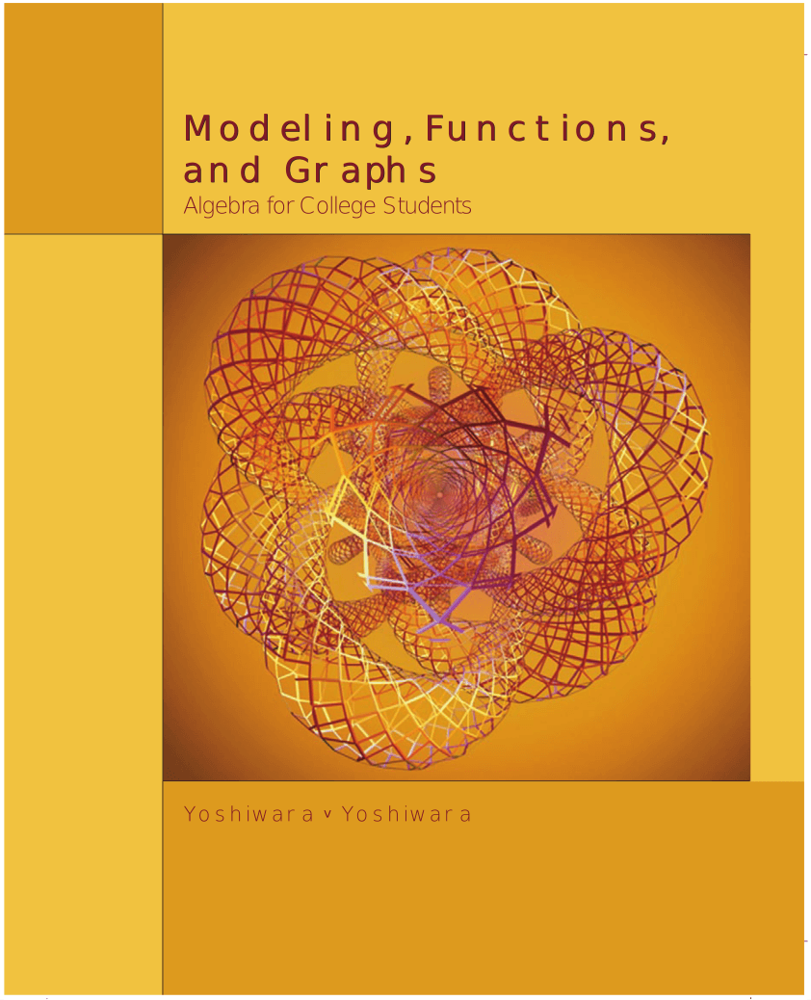

Skip to main content
\(\newcommand{\alert}[1]{\boldsymbol{\color{magenta}{#1}}} \newcommand{\blert}[1]{\boldsymbol{\color{blue}{#1}}} \newcommand{\bluetext}[1]{\color{skyblue}{#1}} \delimitershortfall-1sp \newcommand\abs[1]{\left|#1\right|} \newcommand\degree[0]{^{\circ}} \renewcommand{\CancelColor}{blue} \newcommand{\lt}{<} \newcommand{\gt}{>} \newcommand{\amp}{&} \)

Modeling, Functions, and Graphs
Algebra for College Students
Katherine Yoshiwara
Contents
Index
Prev
Up
Next
Annotations
Contents
Prev
Up
Next
Colophon
Colophon
This book was authored in MathBook XML.